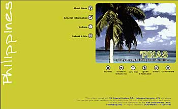
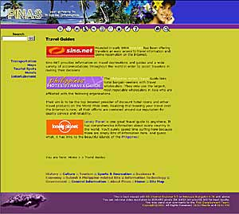

|
Documentation
Office
by: Rey
Mendoza
Our
‘Pinas' website (I bet you didn't know it existed!) got
a major facelift and reorganization last term. After brainstorming
on what to revise on this web site, the web team agreed that
it will not only be a portal that will show you to various
Philippine-related web sites but also contain substantial
content so that visitors will have a reason to come back and
visit the site again.
What
we did was visit and evaluate all those Philippine-related
sites to check if they are worth being included in the ‘Pinas'
web site. We each have our own assignment of topics to research
on and we are required to provide valuable contents and links
for each topic.
The
research part was fun mainly because we learned so many things
about our country we never knew before. The internet has really
changed the way we live, everything, literally can be found
in the internet and that includes Philippine information.
The 'Pinas' web site aims to organize all these information.
There
are so many web sites that are worth being mentioned here
but one stands out.
The
official Philippine Government website, http://www.gov.ph
is one Philippine portal you should not miss. It will be a
lot of help to anyone trying to find some Philippine information.
'Pinas'
web site aspires to provide valuable content, to provide a
preview of what to expect from featured web links and to provide
us with a rich resource of Filipino heritage. Visitors can
also add their own Philippine-related site to this web site.
Consider it ...."your gateway to Philippine Information”.
Other
Articles
|